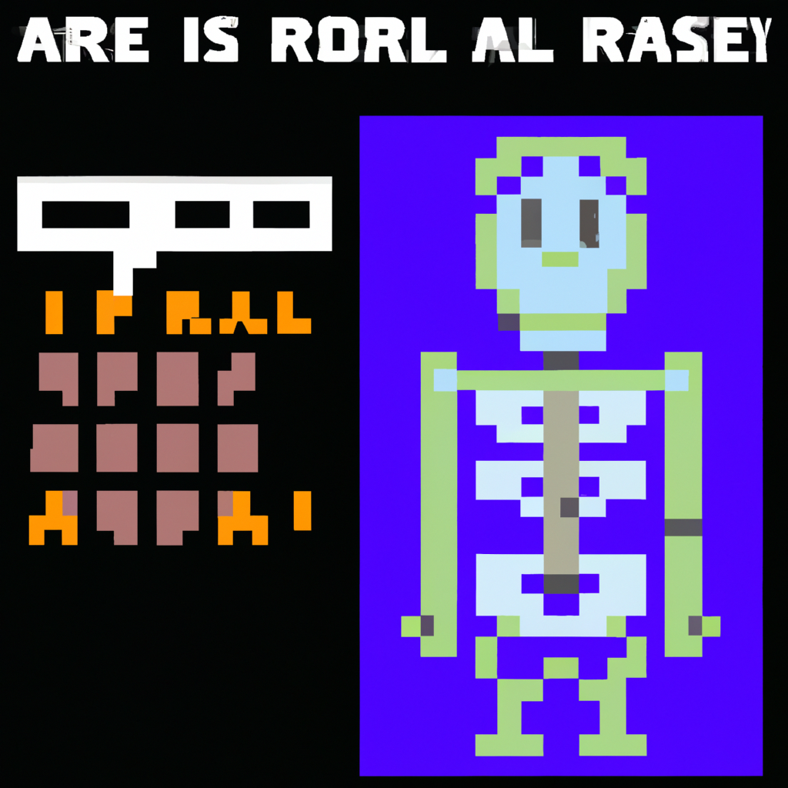

Why AI will never replace the radiologist
The medical field has seen rapid advancements in technology over the past few decades, and the use of artificial intelligence (AI) in medical imaging has been no exception. AI has been used to automate the process of image analysis, with the hope that it could replace the need for radiologists, who often spend hours analyzing images for diagnosis and treatment.
However, there are still some major challenges that need to be addressed before AI can replace radiologists. For starters, AI algorithms require extensive training to recognize patterns in images that may indicate a diagnosis. This process can be time consuming and expensive, and is not always reliable.
In addition, AI algorithms may struggle to accurately interpret the nuances of an image. Radiologists are trained to identify subtle differences in an image that could signal a diagnosis, but AI algorithms may struggle to identify these differences. This can lead to incorrect or incomplete diagnoses, which can be dangerous in the medical field.
Finally, AI algorithms are often not able to provide the same level of personalized care as radiologists. A radiologist understands the patient’s medical history and can take that into account when making a diagnosis, which can help to ensure that the patient receives the best possible care.
Overall, AI is an exciting technology with a lot of potential in the medical field, but it is not yet able to replace the expertise of a radiologist. AI can be used in conjunction with radiologists to streamline the diagnosis process and make it more efficient, but it cannot replace the expertise of a radiologist.